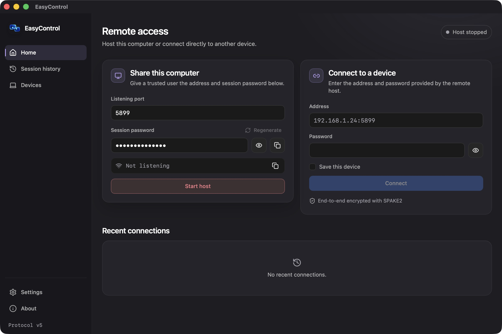

A real address
Connect with host:port. The host shows its actual LAN
endpoint only while listening.
A remote desktop that keeps you close.
Connect over your
local network, share your screen,
and keep control where it belongs. With you.

Hosting and connecting belong together.
Everything you need for
a direct session,
without an account or a cloud device ID.
Real application screenshots. No simulated sessions or sample connection history.
Connect with host:port. The host shows its actual LAN
endpoint only while listening.
Saved devices, local history and Light, Dark or System appearance. Passwords stay out of saved data.
The desktop UI talks to the existing Rust session API. Networking and cryptography stay in the core.
A password opens the session.
It doesn’t hand over the
keyboard.
SPAKE2 password authentication and encrypted key confirmation establish the session.
Protocol v5Desktop hosts start with remote input denied. macOS permission checks stay in place.
Default denyThe host decides when to allow control and can revoke it during the session. The client cannot approve itself.
Host enforcedChoose a port, start sharing, and send the address and session password through a trusted channel.
Default port · 5899
Enter the host’s numeric IP address, port and password on the client. Both computers need a working network path.
LAN · host:port
View the desktop. Approve input on the host when appropriate, and disconnect from either side when finished.
View-only by default
Early software deserves clear boundaries. Here’s where EasyControl stands.
This is a public development preview. You can build the macOS app from the public source repository. Public distribution still needs Developer ID signing, notarization and clean-machine validation. See the build guide.
No account is needed for direct LAN sessions. The desktop app uses an IP address and port. There is no hosted device-ID service, discovery or NAT traversal infrastructure.
The Rust core uses SPAKE2 authentication, encrypted key confirmation and encrypted session traffic. Protocol v5 uses ChaCha20-Poly1305, directional key material and bounded messages. Security-sensitive deployments need independent review.
The architecture uses cross-platform libraries, but the desktop builds and real-device checks reported here were performed on macOS. Windows and Linux are not validated releases.
There are core protocol and permission implementations, but complete desktop clipboard, file-transfer and chat workflows are not available. This website does not present them as working product features.
EasyControl is MIT-licensed and under active development. The application, website and documentation are publicly available together in the same repository. Contact the maintainer on GitHub for project questions.
Explore the architecture. Build the app. Help test what’s next.